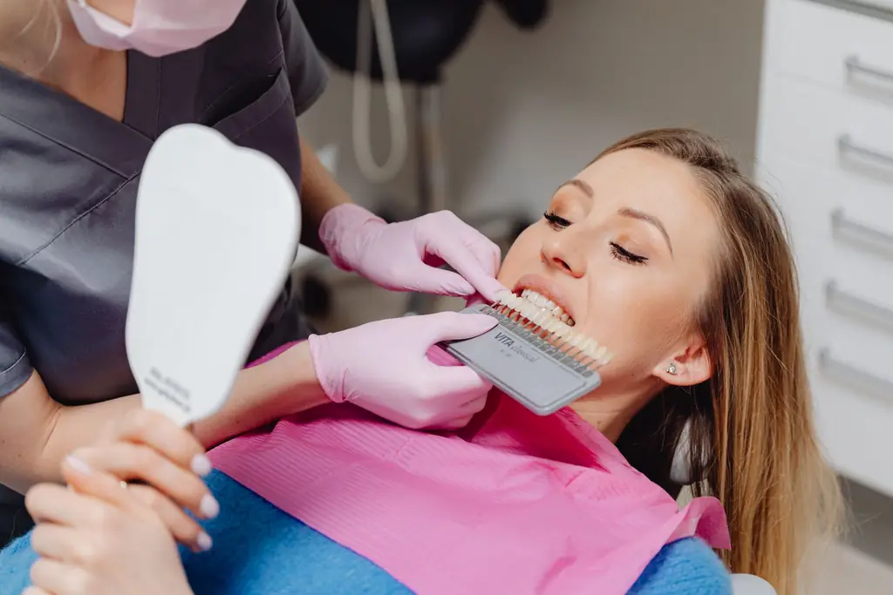

Facettes en céramique
Fines pellicules collées sur la face visible des dents, pour corriger forme, teinte ou petits défauts.
Voir votre futur sourire avant de décider quoi que ce soit.
Teinte, forme, alignement : lors de la consultation esthétique, nous simulons le résultat sur une photo de votre visage. Vous repartez avec un plan de traitement et un devis détaillé, sans engagement.
Premier rendez-vous sous deux semaines en moyenne.

Cliquez sur votre situation : le motif de rendez-vous se remplit tout seul.
Nos soins
Fines pellicules collées sur la face visible des dents, pour corriger forme, teinte ou petits défauts.
Au fauteuil ou à domicile avec gouttières sur mesure, après vérification de la santé des dents.
Pour une dent très abîmée, une couronne sans métal qui s'accorde aux dents voisines.
Gouttières transparentes pour corriger les petits décalages, à l'âge adulte.
Réparation d'une dent ébréchée ou fermeture d'un petit espace en une séance.
Contrôle, détartrage, caries : le suivi de base, indispensable à tout le reste.
Votre rendez-vous
Examen, photos, écoute de ce que vous souhaitez.
Votre futur sourire simulé sur votre photo, ajusté avec vous.
Étapes, durée et devis détaillé remis par écrit.
Séances planifiées, résultat contrôlé ensemble.
Parcours de soin
Patiente de 34 ans
Patient de 52 ans
Patiente de 28 ans
Nos engagements
Dr Claire Aubert, chirurgien-dentiste, esthétique du sourire
« J'ai vu le résultat avant de commencer. Deux facettes plus tard, personne ne devine qu'elles ne sont pas naturelles. »
« Aucune pression commerciale : on m'a même déconseillé un soin inutile. Rare et précieux. »
Questions fréquentes
Votre question n'est pas là ?
Appelez-nous au 01 99 00 26 81.
Les facettes modernes demandent une préparation très fine, parfois aucune. Nous privilégions toujours la solution la plus conservatrice et vous l'expliquons avant.
Non, le blanchiment est un soin esthétique non pris en charge par l'Assurance maladie. Certaines mutuelles participent : le devis vous permet de le vérifier.
Bien entretenues, elles durent de nombreuses années. Un contrôle régulier permet de les surveiller.
Réalisé par un dentiste après un bilan, avec des produits dosés, il est sûr. Il ne convient pas en cas de caries non soignées ou de gencives fragiles.
Oui : contrôles, détartrages et caries font partie de notre suivi quotidien.
Par téléphone ou via le formulaire. Nous vous rappelons pour proposer un créneau de consultation.
Rendez-vous
Dites-nous ce qui vous amène. Nous vous rappelons pour vous proposer un créneau de consultation.
Du lundi au vendredi, 9 h à 19 h, samedi matin
5 avenue Victor-Hugo, 75016 Paris
Patients venant de Paris 16e, Paris 8e, Paris 17e, Neuilly-sur-Seine, Boulogne-Billancourt.